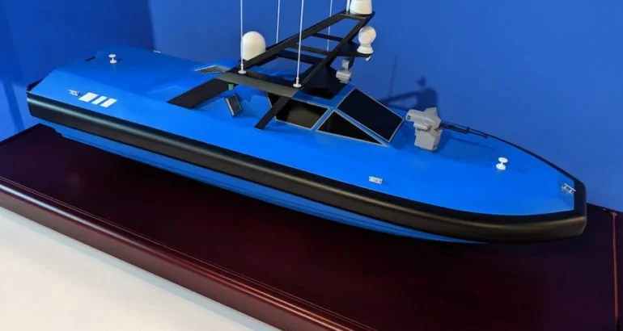

Database · Marine Robotics
Yunzhou Tech
Yunzhou Tech (云洲智能) is a Zhuhai pioneer of unmanned surface vessels — autonomous boats for water monitoring, cleanup and maritime security.
USV Marine Zhuhai

Company Overview
- Yunzhou builds autonomous boats used for water-quality monitoring, oil-spill cleanup, surveying and maritime security.
- Its vessels have operated across China and in international exhibitions and missions.
- A pioneer in China's emerging USV industry.
Key Facts
| Full Name | Zhuhai Yunzhou Intelligent Technology Co., Ltd. |
|---|---|
| Chinese Name | 珠海云洲智能科技有限公司 |
| Founded | 2010 |
| Headquarters | Zhuhai, Guangdong |
| Core Products | USVs for environmental, survey & security |
| Status | Leading Chinese USV developer |
Actuators & Sensors
- Electric/dual-hull propulsion with autonomous navigation.
- GPS/RTK + sensors for water tasks.
- Remote and autonomous mission control.
Supply-Chain Analysis
- Zhuhai maritime tech cluster.
- Hull, nav and power systems integrated in-house.
Competitor Comparison
Few direct consumer rivals; competes regionally in specialised USV categories.